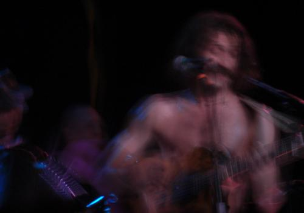
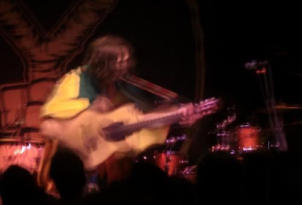

Gogol Bordello: Live at Higher Ground, Burlington
I don’t know who, where or when, but someone once claimed that good rock and roll should be dangerous. I’m not sure if I believe that but I had time to consider the notion during, well, actually long after the Gogol Bordello show I saw Sunday night (6/6/2009) in Burlington. During the show I was too busy hopping up and down and bumping into sweaty people for two straight hours to really absorb what I was seeing. But as I thought back on the alpha boys who were too cool to try out for the football team slamdancing, or being carried up high by the crowd before plummeting headfirst towards the concrete floor, I began to wonder about this whole danger thing. And then when I remembered one of the band’s percussion chicks (I don’t know if it was Pamela or Elizabeth) hurling her giant drum into the audience, who held it aloft as she climbed on top and perilously began dancing, reaching out only occasionally for the light rig above her head so she wouldn’t come crashing to the floor as the band drove the beat home, and then demanding that lead singer Eugene join her on top (and man, she looked like she meant business) just to turn the risk-ometer up to 11, I came to believe that there might be something to the theory.

Photograph by Alan Shulman
I’m an older dude who watched in horror as Korn played the Woodstock, Inc. festival in Rome, NY in ’99, working the crowd into a unified aggressive frenzy that would have had Leni Riefenstahl reaching for the 35mm. The fact that they burned down the place later that night wasn’t really a surprise. I love the energy that punk can release but I’m wary of what can happen to it in the wrong hands. But when the energy is positive, fun, or generally on the side of the angels, oh how liberating it can be! Well, my girlfriend and I were liberated this weekend by the sheer force of what Nietzsche might have called “The Will to Party”, embodied by the kings of Gypsy Punk. I’ve been to a lot of great shows over the years and have been moved to several levels of complex emotions by some great artists, but I don’t think I’ve ever had so much FUN at a concert before. Fuck the ballads, this was nonstop shouting, dancing, sin and syncopation from start to finish. My girlfriend and I were close to the stage, grooving with the hive while those standing on an elevated platform in the back of the hall looked on in what must have been hushed awe at the spectacle before them. We wondered whether it would have been better to be watching the proceedings from the lofty perch or to be in the heart of it as we were. Hell, we figured, you can watch them anytime on youtube, but how often do you get a chance to get carried away like this?

Photograph by Alan Shulman
The venue was the great Vermont music hall, The Higher Ground, which basically consists of a stage, two bars and a big open space. It’s a fantastic place to see a show. It’s big enough to attract an assortment of Indie wonders (I saw Super Furry Animals there) while being small enough to retain an air of intimacy. And the staff was friendly to boot! In fact, everyone we met in Vermont was too damn friendly. You think there’s some kind of GreenMountainValley of the Dolls situation going on here? Crazy, but oh, what a night. It went by in a delirious blur, but it’s a blur I’ll never forget.
16 June, 2009 - 18:27 — Alan Shulman